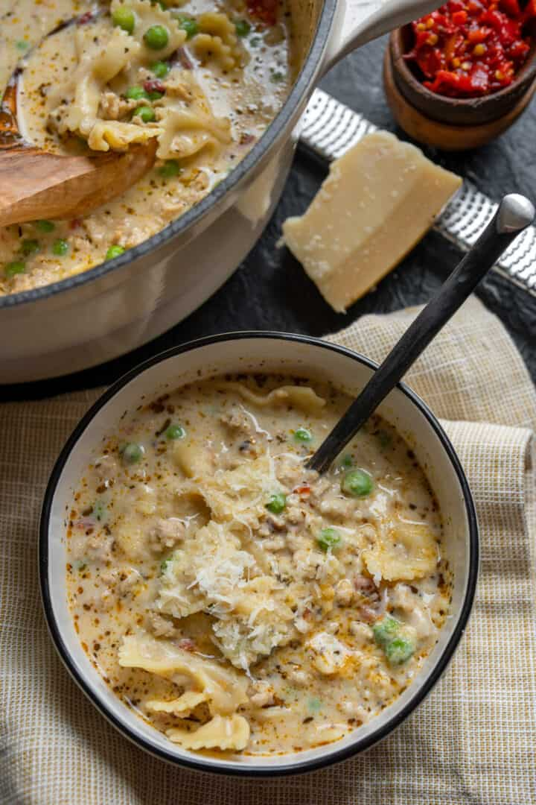

Description
Lean ground chicken, Italian seasoning, garlic, and Calabrian peppers join forces with your favorite pasta, green peas, and a low fat lemon ricotta cheese sauce to make this high protein creamy ground chicken soup.

Ingredients
For the Soup
- 1/2 Tablespoon Olive Oil
- 1 pound Ground Chicken
- 2 teaspoons Italian Seasoning
- 3 cloves Garlic, crushed or minced
- 1 Tablespoon Chopped Calabrian Peppers* (optional)
- 4 cups Reduced Sodium Chicken Broth
- 8 oz Farfalle or Bowtie Pasta
- 1 cup (170g) Frozen Peas
- 2 oz Parmigiano Reggiano or Parmesan, freshly grated
For the Ricotta Sauce
- 15 oz (1 3/4 cup) Low Fat Ricotta
- 1/2 cup Milk
- Juice of 2 Lemons + Zest of 1 Lemon
- Black Pepper, to taste
Steps
- Heat a Dutch oven or large soup pot over medium-high heat with the olive oil. Once hot, add the ground chicken and leave untouched for 3-4 minutes to brown one side before breaking apart and fully cooking.
- To the fully cooked chicken, add the Italian seasoning, garlic, and Calabrian chiles. Stir everything together and cook for 30-60 seconds until the garlic is fragrant.
- Add a few tablespoons of the chicken broth to deglaze the pot, if necessary, before adding the pasta and remaining broth. Cover and cook for 10 minutes, stirring every 3-4 minutes.
- While the pasta cooks, add the ricotta sauce ingredients to a food processor or large cup to blend with an immersion blender. Blend together until smooth and set aside.
- Once the pasta has cooked for 10 minutes, turn off the heat and remove the cover from the pot. Add the frozen peas and stir into the soup, bringing the peas up to temperature and slightly cooling the soup. Once the peas are incorporated, add the ricotta sauce and stir everything together. Finally, stir in the grated cheese.
- Serve immediately while warm. Garnish with additional grated parmesan, Calabrian chiles, black pepper, fresh basil, and a squeeze of lemon juice, if desired. (If you're not serving right away, place the soup over a low heat to keep warm.)
Link to original Recipe